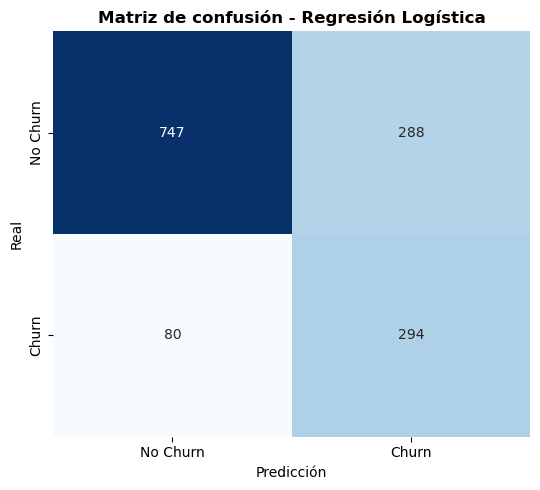
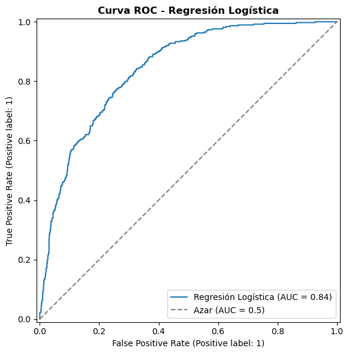

Preprocesamiento de Datos - Telco Customer Churn#
Objetivo: A partir de los hallazgos del EDA (01_EDA_Telco_Churn.ipynb), aplicar de forma sistemática los pasos de limpieza, codificación y escalado necesarios para dejar los datos listos para el modelado, evitando data leakage entre train y test.
1. Importación de librerías#
import pandas as pd
import numpy as np
from sklearn.model_selection import train_test_split
from sklearn.pipeline import Pipeline
from sklearn.compose import ColumnTransformer
from sklearn.preprocessing import StandardScaler, OneHotEncoder
from sklearn.impute import SimpleImputer
import warnings
warnings.filterwarnings('ignore')
RANDOM_STATE = 42
2. Carga de datos y variable objetivo#
df = pd.read_csv(r'C:\Users\laure\Documents\Company_Bankruptcy_Prediction\data\data_2.csv')
df.columns = df.columns.str.strip()
TARGET = 'Churn'
if TARGET not in df.columns:
posibles_target = [col for col in df.columns if 'churn' in col.lower()]
if posibles_target:
TARGET = posibles_target[0]
print(f"Dimensiones del dataset completo: {df.shape[0]} filas x {df.shape[1]} columnas")
df.head()
Dimensiones del dataset completo: 7043 filas x 21 columnas
| customerID | gender | SeniorCitizen | Partner | Dependents | tenure | PhoneService | MultipleLines | InternetService | OnlineSecurity | ... | DeviceProtection | TechSupport | StreamingTV | StreamingMovies | Contract | PaperlessBilling | PaymentMethod | MonthlyCharges | TotalCharges | Churn | |
|---|---|---|---|---|---|---|---|---|---|---|---|---|---|---|---|---|---|---|---|---|---|
| 0 | 7590-VHVEG | Female | 0 | Yes | No | 1 | No | No phone service | DSL | No | ... | No | No | No | No | Month-to-month | Yes | Electronic check | 29.85 | 29.85 | No |
| 1 | 5575-GNVDE | Male | 0 | No | No | 34 | Yes | No | DSL | Yes | ... | Yes | No | No | No | One year | No | Mailed check | 56.95 | 1889.5 | No |
| 2 | 3668-QPYBK | Male | 0 | No | No | 2 | Yes | No | DSL | Yes | ... | No | No | No | No | Month-to-month | Yes | Mailed check | 53.85 | 108.15 | Yes |
| 3 | 7795-CFOCW | Male | 0 | No | No | 45 | No | No phone service | DSL | Yes | ... | Yes | Yes | No | No | One year | No | Bank transfer (automatic) | 42.30 | 1840.75 | No |
| 4 | 9237-HQITU | Female | 0 | No | No | 2 | Yes | No | Fiber optic | No | ... | No | No | No | No | Month-to-month | Yes | Electronic check | 70.70 | 151.65 | Yes |
5 rows × 21 columns
3. División train / test#
Se replica la misma partición estratificada usada en el EDA (misma random_state), para mantener consistencia entre ambos notebooks.
X = df.drop(columns=[TARGET, 'customerID'])
y = df[TARGET]
X_train, X_test, y_train, y_test = train_test_split(
X, y,
test_size=0.2,
random_state=RANDOM_STATE,
stratify=y
)
print(f"Observaciones en train: {len(X_train)}")
print(f"Observaciones en test: {len(X_test)}")
Observaciones en train: 5634
Observaciones en test: 1409
4. Pasos de preprocesamiento definidos a partir del EDA#
Manejo del target: convertir
Churnde ‘Yes’/’No’ a 1/0.Manejo de
TotalCharges: convertir a numérico e imputar los nulos (clientes nuevos contenure = 0) con 0.Ingeniería de características:
Colapsar las categorías redundantes “No internet service” / “No phone service” (el EDA confirmó 0 discrepancias con
InternetService/PhoneService: es información 100% duplicada).Crear
AvgChargePerMonth(cargo promedio histórico) para aprovechar la relacióntenure–TotalCharges(r = 0.83) sin eliminar ninguna de las dos variables originales.Conservar
genderyPhoneServiceaunque el EDA no encontró asociación bivariada significativa con Churn: un test bivariado no ve interacciones con otras variables, así que se deja que el propio modelo confirme (o descarte) su aporte con toda la información disponible.
Codificación de variables categóricas:
Variables nominales (más de 2 categorías, incluyendo binarias tipo Yes/No): One-Hot Encoding (OHE).
Escalado de variables numéricas:
tenure,MonthlyCharges,TotalChargesyAvgChargePerMonthse estandarizan conStandardScaler.
Todas las decisiones (parámetros de imputación, escalado y codificación) se aprenden únicamente de train y luego se aplican a test, para evitar data leakage.
4.1 Manejo del target#
y_train = y_train.map({'Yes': 1, 'No': 0})
y_test = y_test.map({'Yes': 1, 'No': 0})
print(y_train.value_counts(normalize=True))
Churn
0 0.734647
1 0.265353
Name: proportion, dtype: float64
4.2 Manejo de TotalCharges#
# Convertir a numérico, forzando errores (espacios en blanco) a NaN
X_train['TotalCharges'] = pd.to_numeric(X_train['TotalCharges'], errors='coerce')
X_test['TotalCharges'] = pd.to_numeric(X_test['TotalCharges'], errors='coerce')
print("Nulos en TotalCharges (train) antes de imputar:", X_train['TotalCharges'].isnull().sum())
print("Nulos en TotalCharges (test) antes de imputar:", X_test['TotalCharges'].isnull().sum())
# Imputar con 0 (clientes nuevos, tenure = 0), decisión basada en el hallazgo del EDA
X_train['TotalCharges'] = X_train['TotalCharges'].fillna(0)
X_test['TotalCharges'] = X_test['TotalCharges'].fillna(0)
print("Nulos en TotalCharges (train) después de imputar:", X_train['TotalCharges'].isnull().sum())
print("Nulos en TotalCharges (test) después de imputar:", X_test['TotalCharges'].isnull().sum())
Nulos en TotalCharges (train) antes de imputar: 8
Nulos en TotalCharges (test) antes de imputar: 3
Nulos en TotalCharges (train) después de imputar: 0
Nulos en TotalCharges (test) después de imputar: 0
4.3 Ingeniería de características a partir del EDA#
a) Colapsar categorías redundantes. El EDA confirmó (sección de consistencia, “0 discrepancias”) que “No internet service” y “No phone service” son información 100% duplicada con InternetService/PhoneService. No hay trade-off real: colapsarlas solo reduce dimensionalidad del One-Hot Encoding sin perder señal.
# Colapsar categorías redundantes detectadas en el EDA:
# "No internet service" y "No phone service" ya están implícitas en
# InternetService y PhoneService respectivamente — mantenerlas duplica esa información
cols_no_internet = ['OnlineSecurity', 'OnlineBackup', 'DeviceProtection',
'TechSupport', 'StreamingTV', 'StreamingMovies']
for col in cols_no_internet:
X_train[col] = X_train[col].replace('No internet service', 'No')
X_test[col] = X_test[col].replace('No internet service', 'No')
X_train['MultipleLines'] = X_train['MultipleLines'].replace('No phone service', 'No')
X_test['MultipleLines'] = X_test['MultipleLines'].replace('No phone service', 'No')
print("Categorías únicas tras colapsar (ejemplo, OnlineSecurity):", X_train['OnlineSecurity'].unique())
print("Categorías únicas tras colapsar (MultipleLines):", X_train['MultipleLines'].unique())
Categorías únicas tras colapsar (ejemplo, OnlineSecurity): ['No' 'Yes']
Categorías únicas tras colapsar (MultipleLines): ['No' 'Yes']
b) tenure vs TotalCharges (r = 0.83): variable derivada, no eliminación. El EDA dejó esta correlación como un punto a resolver. La decisión más sólida es no borrar ninguna de las dos originales:
Con Regresión Logística (regularización L2 por defecto en scikit-learn), la multicolinealidad moderada no rompe el modelo: el peso se reparte entre las variables correlacionadas. El problema real de la multicolinealidad aparece al interpretar coeficientes individuales, no al predecir.
Eliminar una variable “a mano” tira información real: dos clientes con la misma antigüedad pueden tener
TotalChargesdistintos si pagaron planes diferentes — esa diferencia es señal, no ruido.Si más adelante se prueban modelos de árboles (Random Forest, Gradient Boosting), la multicolinealidad casi no los afecta, así que optimizar esto solo para el modelo lineal sería trabajo desperdiciado.
En su lugar, se agrega AvgChargePerMonth (cargo promedio histórico) como variable adicional, dejando que el modelo decida cuánto peso darle a cada una.
Cuidado con
tenure = 0: para esos clientes,TotalChargesya se imputó en 0 (sección 4.2), así queTotalCharges / tenuredaría 0, sugiriendo falsamente “no paga nada”. En realidad sí tienen una tarifa mensual (MonthlyCharges), solo que aún no la han acumulado. Se usaMonthlyChargescomo proxy para esos casos en vez de dividir directamente.Honestidad sobre esta variable: una vez corregida,
AvgChargePerMonthtermina siendo muy similar aMonthlyChargespara la mayoría de los clientes (porqueTotalCharges ≈ tenure × MonthlyChargescuando no hay cambios de plan). Su aporte real está en los casos donde diverge — clientes que cambiaron de plan con el tiempo. Es una variable barata de probar, no una solución mágica a la colinealidad; su utilidad se valida en la etapa de modelado, no se asume aquí.
# Cargo promedio histórico: relación entre lo acumulado y la antigüedad.
# Se agrega como variable adicional, sin eliminar tenure ni TotalCharges.
# Para tenure = 0, TotalCharges ya fue imputado a 0, por lo que TotalCharges/tenure
# daría 0 (sugiriendo "no paga nada"), lo cual es falso: sí tiene una tarifa mensual,
# solo que aún no la ha acumulado. Se usa MonthlyCharges como proxy en esos casos.
X_train['AvgChargePerMonth'] = np.where(
X_train['tenure'] > 0,
X_train['TotalCharges'] / X_train['tenure'],
X_train['MonthlyCharges']
)
X_test['AvgChargePerMonth'] = np.where(
X_test['tenure'] > 0,
X_test['TotalCharges'] / X_test['tenure'],
X_test['MonthlyCharges']
)
X_train[['tenure', 'MonthlyCharges', 'TotalCharges', 'AvgChargePerMonth']].describe()
| tenure | MonthlyCharges | TotalCharges | AvgChargePerMonth | |
|---|---|---|---|---|
| count | 5634.000000 | 5634.000000 | 5634.000000 | 5634.000000 |
| mean | 32.485091 | 64.929961 | 2299.334682 | 64.938144 |
| std | 24.568744 | 30.138105 | 2279.204278 | 30.224872 |
| min | 0.000000 | 18.400000 | 0.000000 | 13.828571 |
| 25% | 9.000000 | 35.662500 | 402.975000 | 36.045516 |
| 50% | 29.000000 | 70.500000 | 1394.925000 | 70.588666 |
| 75% | 55.000000 | 90.000000 | 3835.825000 | 90.464446 |
| max | 72.000000 | 118.750000 | 8684.800000 | 121.400000 |
c) gender y PhoneService: se conservan. El EDA encontró que no tienen asociación bivariada significativa con Churn (tras corrección de Holm). Aun así, se mantienen en el pipeline, pero por una razón más simple y defendible que “el modelo puede captar interacciones ocultas”:
Matiz importante: una Regresión Logística sin términos de interacción explícitos no descubre por sí sola una interacción como
gender × SeniorCitizen— ese argumento aplica más a modelos de árboles (Random Forest, Gradient Boosting) que sí pueden capturar ese tipo de patrones automáticamente. No es la razón principal para mantenerlas aquí.La razón real es más simple: son solo 2 variables de 15+, el costo de dejarlas es mínimo, y eliminarlas a priori con base en un test univariado es una práctica metodológicamente débil (pre-selección ciega de variables), independientemente de si el modelo capta o no interacciones.
La evidencia final debe salir del propio modelo: si el coeficiente de
genderen la regresión logística resulta cercano a 0, eso confirma empíricamente el hallazgo del EDA — es mejor evidencia para las conclusiones que haberlas eliminado de antemano por suposición.
Por eso no se eliminan aquí: se dejan en el pipeline y su aporte (o falta de él) se revisa con los coeficientes del modelo en la etapa de evaluación.
4.4 Definición de columnas por tipo#
numeric_features = ['tenure', 'MonthlyCharges', 'TotalCharges', 'SeniorCitizen', 'AvgChargePerMonth']
categorical_features = [col for col in X_train.columns if col not in numeric_features]
print(f"Numéricas ({len(numeric_features)}): {numeric_features}")
print(f"Categóricas ({len(categorical_features)}): {categorical_features}")
Numéricas (5): ['tenure', 'MonthlyCharges', 'TotalCharges', 'SeniorCitizen', 'AvgChargePerMonth']
Categóricas (15): ['gender', 'Partner', 'Dependents', 'PhoneService', 'MultipleLines', 'InternetService', 'OnlineSecurity', 'OnlineBackup', 'DeviceProtection', 'TechSupport', 'StreamingTV', 'StreamingMovies', 'Contract', 'PaperlessBilling', 'PaymentMethod']
4.5 Construcción del ColumnTransformer#
preprocessor = ColumnTransformer(
transformers=[
('num', StandardScaler(), numeric_features),
('cat', OneHotEncoder(handle_unknown='ignore', drop='first'), categorical_features)
]
)
Nota:
SeniorCitizenya es numérica (0/1) y se incluye ennumeric_features; elStandardScalerno le hará daño (queda en una escala similar a las otras variables binarias tras la transformación) y simplifica el pipeline.
5. Aplicación del preprocesamiento#
# Ajustar SOLO con train
X_train_processed = preprocessor.fit_transform(X_train)
# Transformar test (nunca ajustar de nuevo)
X_test_processed = preprocessor.transform(X_test)
print(f"Dimensiones de X_train_processed: {X_train_processed.shape}")
print(f"Dimensiones de X_test_processed: {X_test_processed.shape}")
Dimensiones de X_train_processed: (5634, 24)
Dimensiones de X_test_processed: (1409, 24)
5.1 Recuperar nombres de columnas resultantes (opcional, útil para interpretabilidad)#
feature_names = preprocessor.get_feature_names_out()
X_train_processed_df = pd.DataFrame(X_train_processed, columns=feature_names, index=X_train.index)
X_test_processed_df = pd.DataFrame(X_test_processed, columns=feature_names, index=X_test.index)
X_train_processed_df.head()
| num__tenure | num__MonthlyCharges | num__TotalCharges | num__SeniorCitizen | num__AvgChargePerMonth | cat__gender_Male | cat__Partner_Yes | cat__Dependents_Yes | cat__PhoneService_Yes | cat__MultipleLines_Yes | ... | cat__DeviceProtection_Yes | cat__TechSupport_Yes | cat__StreamingTV_Yes | cat__StreamingMovies_Yes | cat__Contract_One year | cat__Contract_Two year | cat__PaperlessBilling_Yes | cat__PaymentMethod_Credit card (automatic) | cat__PaymentMethod_Electronic check | cat__PaymentMethod_Mailed check | |
|---|---|---|---|---|---|---|---|---|---|---|---|---|---|---|---|---|---|---|---|---|---|
| 3738 | 0.102371 | -0.521976 | -0.262257 | -0.441773 | -0.539986 | 1.0 | 0.0 | 0.0 | 0.0 | 0.0 | ... | 1.0 | 0.0 | 1.0 | 1.0 | 0.0 | 0.0 | 0.0 | 0.0 | 1.0 | 0.0 |
| 3151 | -0.711743 | 0.337478 | -0.503635 | -0.441773 | 0.391496 | 1.0 | 1.0 | 1.0 | 1.0 | 0.0 | ... | 0.0 | 0.0 | 0.0 | 0.0 | 0.0 | 0.0 | 0.0 | 0.0 | 0.0 | 1.0 |
| 4860 | -0.793155 | -0.809013 | -0.749883 | -0.441773 | -0.646102 | 1.0 | 1.0 | 1.0 | 0.0 | 0.0 | ... | 0.0 | 1.0 | 0.0 | 0.0 | 0.0 | 1.0 | 0.0 | 0.0 | 0.0 | 1.0 |
| 3867 | -0.263980 | 0.284384 | -0.172722 | -0.441773 | 0.276552 | 0.0 | 1.0 | 0.0 | 1.0 | 0.0 | ... | 1.0 | 0.0 | 1.0 | 1.0 | 0.0 | 1.0 | 1.0 | 1.0 | 0.0 | 0.0 |
| 3810 | -1.281624 | -0.676279 | -0.989374 | -0.441773 | -0.674608 | 1.0 | 1.0 | 1.0 | 1.0 | 0.0 | ... | 0.0 | 0.0 | 0.0 | 0.0 | 0.0 | 0.0 | 0.0 | 0.0 | 1.0 | 0.0 |
5 rows × 24 columns
6. Guardar los conjuntos procesados (opcional)#
X_train_processed_df.to_csv('X_train_processed.csv', index=False)
X_test_processed_df.to_csv('X_test_processed.csv', index=False)
y_train.to_csv('y_train.csv', index=False)
y_test.to_csv('y_test.csv', index=False)
print("Archivos guardados: X_train_processed.csv, X_test_processed.csv, y_train.csv, y_test.csv")
Archivos guardados: X_train_processed.csv, X_test_processed.csv, y_train.csv, y_test.csv
7. Prueba rápida con Regresión Logística#
Antes de pasar a un modelado más elaborado, entrenamos una Regresión Logística como modelo base (baseline) sobre los datos ya preprocesados. Esto da un primer score de referencia contra el cual comparar modelos más complejos (Random Forest, Gradient Boosting, etc.).
Dado el desbalance de clases detectado en el EDA (~73% No Churn / ~27% Churn), usamos class_weight='balanced' y evaluamos con varias métricas además de la exactitud (Accuracy), ya que esta última puede ser engañosa en problemas desbalanceados.
from sklearn.linear_model import LogisticRegression
from sklearn.metrics import (
accuracy_score, precision_score, recall_score, f1_score,
roc_auc_score, confusion_matrix, classification_report, RocCurveDisplay
)
import matplotlib.pyplot as plt
import seaborn as sns
log_reg = LogisticRegression(
max_iter=1000,
class_weight='balanced',
random_state=RANDOM_STATE
)
log_reg.fit(X_train_processed, y_train)
y_pred = log_reg.predict(X_test_processed)
y_proba = log_reg.predict_proba(X_test_processed)[:, 1]
7.1 Score general (Accuracy) y métricas clave#
accuracy = accuracy_score(y_test, y_pred)
precision = precision_score(y_test, y_pred)
recall = recall_score(y_test, y_pred)
f1 = f1_score(y_test, y_pred)
auc = roc_auc_score(y_test, y_proba)
print(f"Accuracy (score): {accuracy:.4f}")
print(f"Precision: {precision:.4f}")
print(f"Recall: {recall:.4f}")
print(f"F1-Score: {f1:.4f}")
print(f"AUC-ROC: {auc:.4f}")
print("\nEl método .score() de sklearn equivale a la Accuracy:")
print(f"log_reg.score(X_test_processed, y_test) = {log_reg.score(X_test_processed, y_test):.4f}")
Accuracy (score): 0.7388
Precision: 0.5052
Recall: 0.7861
F1-Score: 0.6151
AUC-ROC: 0.8419
El método .score() de sklearn equivale a la Accuracy:
log_reg.score(X_test_processed, y_test) = 0.7388
7.2 Matriz de confusión y reporte de clasificación#
cm = confusion_matrix(y_test, y_pred)
print("Matriz de confusión (filas: real, columnas: predicho):")
print(cm)
print("\nReporte de clasificación:")
print(classification_report(y_test, y_pred, target_names=['No Churn', 'Churn']))
Matriz de confusión (filas: real, columnas: predicho):
[[747 288]
[ 80 294]]
Reporte de clasificación:
precision recall f1-score support
No Churn 0.90 0.72 0.80 1035
Churn 0.51 0.79 0.62 374
accuracy 0.74 1409
macro avg 0.70 0.75 0.71 1409
weighted avg 0.80 0.74 0.75 1409
fig, ax = plt.subplots(figsize=(5.5, 5))
sns.heatmap(
cm, annot=True, fmt='d', cmap='Blues', cbar=False,
xticklabels=['No Churn', 'Churn'], yticklabels=['No Churn', 'Churn'], ax=ax
)
ax.set_xlabel('Predicción')
ax.set_ylabel('Real')
ax.set_title('Matriz de confusión - Regresión Logística', fontweight='bold')
plt.tight_layout()
plt.show()

7.3 Curva ROC#
fig, ax = plt.subplots(figsize=(6, 6))
RocCurveDisplay.from_predictions(y_test, y_proba, ax=ax, name='Regresión Logística')
ax.plot([0, 1], [0, 1], linestyle='--', color='gray', label='Azar (AUC = 0.5)')
ax.set_title('Curva ROC - Regresión Logística', fontweight='bold')
ax.legend()
plt.tight_layout()
plt.show()

7.4 Interpretación del resultado#
El Accuracy (score por defecto de sklearn) da una primera idea del desempeño general, pero al haber desbalance de clases (~27% Churn) puede sobreestimar la calidad del modelo si este favorece a la clase mayoritaria.
El Recall de la clase Churn es especialmente importante en este problema de negocio: interesa detectar la mayor cantidad posible de clientes que realmente van a abandonar, aunque eso implique sacrificar algo de Precisión.
El AUC-ROC resume la capacidad del modelo para separar ambas clases independientemente del umbral de decisión, y es más robusta que el Accuracy en este contexto.
Este resultado de Regresión Logística sirve como línea base para comparar contra Random Forest, Gradient Boosting u otros algoritmos más adelante.
7.5 Cerrando el punto pendiente del EDA: ¿aportan gender y PhoneService?#
En la sección 4.3 se decidió mantener gender y PhoneService pese a que el EDA no encontró asociación bivariada significativa con Churn, dejando que el propio modelo lo confirmara. Se revisan aquí sus coeficientes (ya estandarizados por el StandardScaler para las numéricas y codificados con OHE para las categóricas, por lo que la magnitud es comparable entre variables).
coeficientes = pd.Series(log_reg.coef_[0], index=feature_names).sort_values(key=np.abs, ascending=False)
print("Todos los coeficientes ordenados por magnitud absoluta:")
print(coeficientes)
print("\nCoeficientes específicos de gender y PhoneService:")
cols_revisar = [c for c in feature_names if 'gender' in c or 'PhoneService' in c]
print(coeficientes[cols_revisar])
Todos los coeficientes ordenados por magnitud absoluta:
cat__Contract_Two year -1.414771
num__tenure -1.140778
cat__InternetService_No -1.095142
cat__InternetService_Fiber optic 1.058314
cat__Contract_One year -0.721303
num__TotalCharges 0.468794
cat__PaymentMethod_Electronic check 0.401170
cat__OnlineSecurity_Yes -0.363730
cat__StreamingMovies_Yes 0.358041
cat__PaperlessBilling_Yes 0.338012
cat__StreamingTV_Yes 0.331868
num__MonthlyCharges -0.309501
cat__TechSupport_Yes -0.298389
cat__MultipleLines_Yes 0.294034
cat__PhoneService_Yes -0.288930
cat__Dependents_Yes -0.227373
cat__OnlineBackup_Yes -0.104842
num__SeniorCitizen 0.057377
cat__PaymentMethod_Mailed check 0.045803
num__AvgChargePerMonth -0.033191
cat__gender_Male 0.031740
cat__Partner_Yes 0.015401
cat__DeviceProtection_Yes 0.009660
cat__PaymentMethod_Credit card (automatic) -0.002532
dtype: float64
Coeficientes específicos de gender y PhoneService:
cat__gender_Male 0.03174
cat__PhoneService_Yes -0.28893
dtype: float64
Si estos coeficientes están entre los más cercanos a 0 (comparados con variables como
ContractoInternetService), eso confirma empíricamente, ya con el modelo multivariado y no solo con el test bivariado del EDA, quegenderyPhoneServiceaportan poco a esta Regresión Logística. Es una conclusión más sólida para el informe que haberlas eliminado de antemano por sospecha.
8. Resumen y próximos pasos#
El target se transformó a binario (0/1).
TotalChargesse convirtió a numérico y sus nulos (clientes nuevos,tenure = 0) se imputaron con 0, usando una lógica derivada del EDA y aplicada de forma consistente atrainytest.Se resolvieron los 3 hallazgos pendientes del EDA:
Se colapsaron las categorías redundantes (“No internet service” / “No phone service”), sin pérdida de señal.
Se agregó
AvgChargePerMonthpara complementar la relacióntenure/TotalCharges(r = 0.83), sin eliminar ninguna de las dos originales, y corrigiendo el casotenure = 0conMonthlyChargescomo proxy.Se conservaron
genderyPhoneServiceen vez de eliminarlas a priori; su aporte real se confirmó revisando los coeficientes del modelo (sección 7.5), en vez de decidirlo solo con el test bivariado del EDA.
Las variables numéricas se estandarizaron y las categóricas se codificaron con One-Hot Encoding, ajustando el transformador únicamente sobre
train.Se entrenó y evaluó una Regresión Logística como modelo base, obteniendo su score (Accuracy) y métricas complementarias (Precision, Recall, F1, AUC-ROC) dado el desbalance de clases observado en el EDA.
Los conjuntos
X_train_processed/X_test_processedyy_train/y_testquedan listos para probar modelos adicionales (Random Forest, Gradient Boosting, etc.) y comparar su desempeño contra esta línea base.